Charleston Travel Guide
Charming coastal destination known for its well-preserved historic architecture, vibrant culinary scene, and picturesque waterfront views.
Top Locations


-400.jpg)

Places to See in Charleston
Angel Oak Tree
Southern live oak (Quercus virginiana) estimated to be 400-500 years old, standing 66.5 ft (20 m) tall, measures 28 ft (8.5 m) in circumference, and produces shade that covers 17,200 square feet (1,600 m2)
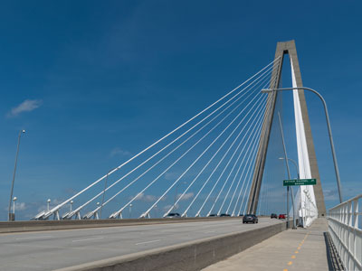
DXR, CC BY-SA 4.0, via Wikimedia Commons; Image Size Adjusted

Arthur Ravenel Jr. Bridge
Cable-stayed bridge over the Cooper River connecting downtown Charleston to Mount Pleasant with a main span of 1,546 feet (471 m), the third longest among cable-stayed bridges in the Western Hemisphere
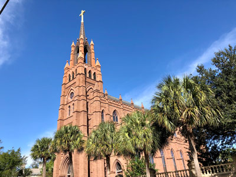
Warren LeMay from Covington, KY, United States, CC0, via Wikimedia Commons; Image Size Adjusted
.jpg){kind=link}
Charles Pinckney National Historic Site
Mother church of the Roman Catholic Diocese of Charleston, designed in the Gothic Revival style

Charleston Naval Complex
Redeveloped military base featuring memorials, public parks, and preserved naval heritage sites along the Cooper River waterfront.
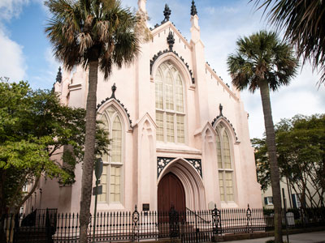
Andrea Kennedy (owner of Fernweh Travel Images), CC BY-SA 4.0, via Wikimedia Commons; Image Size Adjusted

H.L. Hunley Submarine
Conservation laboratory and museum displaying the world's first successful combat submarine along with artifacts, interactive exhibits, and ongoing preservation work that reveals new details about Civil War naval history.
Liberty Square
Waterfront greenspace featuring shaded walkways, harbor views, and access to educational exhibits and ferry tours.
Mount Pleasant Memorial Waterfront Park
Scenic public park offering harbor views, a long fishing pier, shaded swings, and cultural exhibits beneath the Ravenel Bridge.
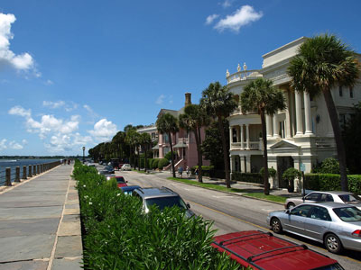
Chris Pruitt, CC BY-SA 3.0, via Wikimedia Commons; Image Size Adjusted

The Battery
Landmark defensive seawall and promenade that stretches along the lower shores of the Charleston peninsula and famous for its stately, mainly antebellum homes
Boone Hall Plantation and Gardens
Historic estate offering guided house tours, Gullah cultural presentations, and expansive gardens framed by a famous avenue of oaks.
Warren LeMay from Covington, KY, United States, CC0, via Wikimedia Commons; Image Size Adjusted
Cathedral of Saint John the Baptist
Mother church of the Roman Catholic Diocese of Charleston, designed in the Gothic Revival style
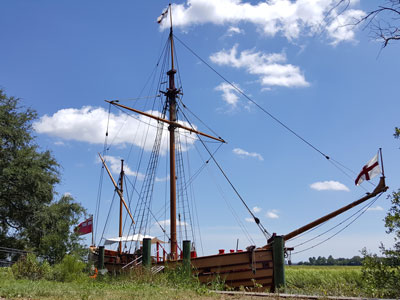
The ed17, CC BY-SA 4.0, via Wikimedia Commons; Image Size Adjusted
_at_Charles_Towne_Landing,_South_Carolina.jpg){kind=link}
Charles Towne Landing State Historic Site
Preserves the original site of the first permanent English settlement in South Carolina and is home to an exhibit hall, natural habitat zoo, ongoing archeological excavations, miles of trails, a replica tall ship, and six fireable replica cannon
City Market
Historic market complex in downtown Charleston established in the 1790s, the market stretches for four city blocks from the architecturally-significant Market Hall, through a continuous series of one-story market sheds
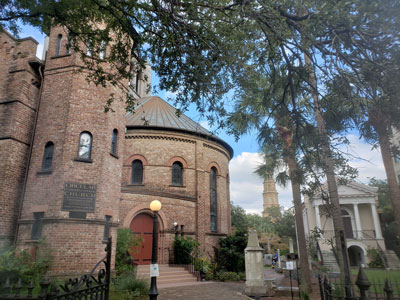
Warren LeMay from Covington, KY, United States, CC0, via Wikimedia Commons; Image Size Adjusted
Circular Congregational Church
Historic church in Charleston used by a congregation established in 1681 and is a highly significant Greek Revival architectural work.
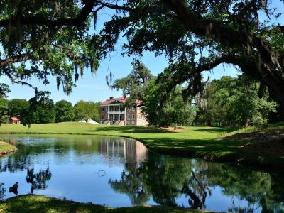
Warren LeMay from Covington, KY, United States, CC0, via Wikimedia Commons; Image Size Adjusted
Drayton Hall
Unrestored 18th-century estate offering guided house tours, archaeological exhibits, and preserved African American burial grounds.
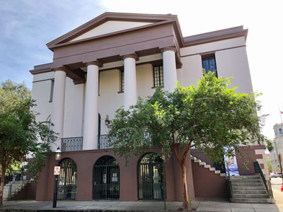
Warren LeMay from Covington, KY, United States, CC0, via Wikimedia Commons; Image Size Adjusted
.jpg){kind=link}
Fireproof Building
Completed in 1827, it was the most fire-resistant building in America at the time, and is believed to be the oldest fire-resistant building in America today
Folly Beach
City on Folly Island home to numerous surf spots and an eclectic beach community with surf shops, restaurants, gift shops, offices, and bars along Center Street
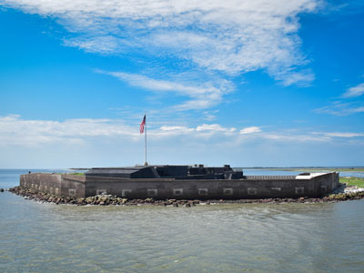
Clynnwersch, CC BY-SA 4.0, via Wikimedia Commons; Image Size Adjusted

Fort Sumter and Fort Moultrie National Historical Park
Historical park protects Fort Sumter, known for the location of the Battle of Fort Sumter that began the American Civil War, Fort Moultrie, the Charleston Light and Liberty Square
Andrea Kennedy (owner of Fernweh Travel Images), CC BY-SA 4.0, via Wikimedia Commons; Image Size Adjusted
French Huguenot Church
Neo-Gothic Protestant church featuring distinctive pink stucco architecture, historic stained glass, and one of the oldest continuously active Huguenot congregations in the United States.
Magnolia Plantation and Gardens
Historic house with gardens located on the Ashley River is one of the oldest plantations in the South
McLeod Plantation Historic Site
Historic Gullah/Geechee heritage site featuring preserved plantation buildings, live oak alleys, and guided tours focused on African American history.
Middleton Place
Historic plantation and museum complex featuring America’s oldest landscaped gardens, heritage livestock, and immersive history tours.
Old Exchange & Provost Dungeon
Historic building built in 1767-1771, it has served a variety of civic institutional functions, including notably as a prisoner of war facility operated by British forces during the American Revolutionary War
Old Slave Mart Museum
Building in Charleston that once housed an antebellum slave auction gallery that today houses the Old Slave Mart Museum
Patriots Point Naval & Maritime Museum
Expansive maritime museum featuring historic naval vessels, aircraft, and immersive exhibits including a Vietnam War experience and Medal of Honor museum.
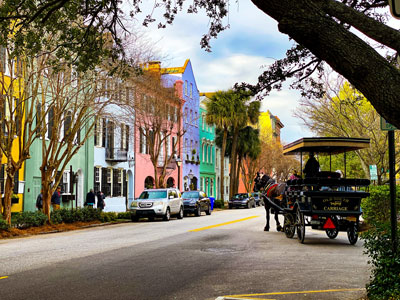
Photo by Leonel Heisenberg on Unsplash; Image Size Adjusted
Rainbow Row
Series of pastel-colored historic Georgian-style row houses featuring symmetrical facades and decorative details that create a vivid streetscape.
St. Philip's Church
Oldest European-American religious congregation in South Carolina
Sullivans Island
Barrier island community featuring wide sandy beaches, maritime landscapes, historic landmarks, and a relaxed coastal atmosphere.
Unitarian Church in Charleston
Historic Gothic Revival church featuring stained glass windows, ornate interior woodwork, and a landscaped cemetery associated with an active liberal religious congregation.
Washington Square
Historic public park featuring landscaped walkways, monuments, and open green space that serves as a gathering place for visitors and community events.
Waterfront Park
Eight-acre waterfront park featuring landscaped gardens, fountains, walking paths, harbor views, and public gathering spaces.
White Point Garden
Historic public park featuring mature live oak trees, Civil War-era cannons, monuments, walking paths, and open green space overlooking Charleston Harbor.
Overview
Charleston is a historic port city on the South Carolina coast, founded in 1670, and it is famous for its cobblestone streets, pastel-colored houses, church steeples, horse-drawn carriages, and Lowcountry cuisine. It is a city of Southern charm and deep history, where the first shots of the Civil War were fired at Fort Sumter in 1861. Consistently ranked among the best cities in the world for travelers, Charleston has a thriving food scene, beautiful architecture, and nearby beaches and plantations.
Visitors come to Charleston to see Rainbow Row, the Battery and White Point Garden, and the Charleston City Market. They also come for historic plantations such as Boone Hall, Magnolia, and Middleton Place, for Fort Sumter, and for the beaches at Folly Beach and Sullivan's Island.
History
English settlers founded Charles Towne in 1670, naming it for King Charles II, and it grew into a major port for rice, indigo, and, tragically, the slave trade, with nearly half of all enslaved Africans brought to the American colonies passing through the Charleston area. During the Revolution, the city was besieged and captured by the British in 1780, and in 1861 Confederate troops fired on Fort Sumter in Charleston Harbor, beginning the Civil War. The city suffered through a long siege, the Reconstruction era, and a major earthquake in 1886, and in 1989 Hurricane Hugo devastated the area. Charleston's economy shifted to tourism, port activity, and manufacturing, and the historic district has been carefully preserved.
Sightseeing and Popular Landmarks
Rainbow Row, a series of 13 pastel-colored Georgian row houses on East Bay Street, is one of the most photographed streets in America. White Point Garden and the Battery are a waterfront park and promenade with views of the harbor, and the Old Exchange and Provost Dungeon is a colonial building where George Washington dined. The Arthur Ravenel Jr. Bridge is a cable-stayed bridge that crosses the Cooper River, and the Cathedral of St. John the Baptist and the Angel Oak, a live oak that is estimated to be 400 to 500 years old, are other landmarks.
Culture and Museums
The Old Slave Mart Museum tells the story of the domestic slave trade, and the McLeod Plantation focuses on the lives of the enslaved and the Gullah Geechee people. The Patriots Point Naval & Maritime Museum has the aircraft carrier USS Yorktown, and the H. L. Hunley Submarine, the first submarine to sink an enemy ship, is displayed at the Warren Lasch Conservation Center. The Charles Pinckney National Historic Site and Drayton Hall, a preserved Palladian plantation house, are historic sites, and the Spoleto Festival USA each May and June is a major arts event.
Parks
Charleston has many parks and gardens. Waterfront Park has a famous pineapple fountain, and Mount Pleasant Memorial Waterfront Park has a pier with views of the harbor. Folly Beach, Sullivan's Island, and the Isle of Palms have wide Atlantic beaches, and Charles Towne Landing is the site of the original settlement. The plantations' gardens, including Magnolia and Middleton Place, are among the oldest in the country.
Seasons and Weather
Charleston has a humid subtropical climate. Summers are hot and humid, with highs in the low 90s°F and afternoon thunderstorms, and winters are mild, with highs in the 50s°F and very little snow. Spring and fall are the most pleasant seasons, and hurricane season runs from June to November. Flooding in the historic district can occur during high tides and storms.
This article uses material from Wikipedia as well as information from official tourism and institutional sources. Key references include Explore Charleston, National Park Service Fort Sumter and Fort Moultrie National Historical Park, Charleston Museum, Middleton Place, Spoleto Festival USA, Discover South Carolina, and National Weather Service Charleston. Wikipedia material is from the articles "Charleston, South Carolina" and "History of Charleston, South Carolina", and is available under the Creative Commons Attribution-Share-Alike License 3.0.
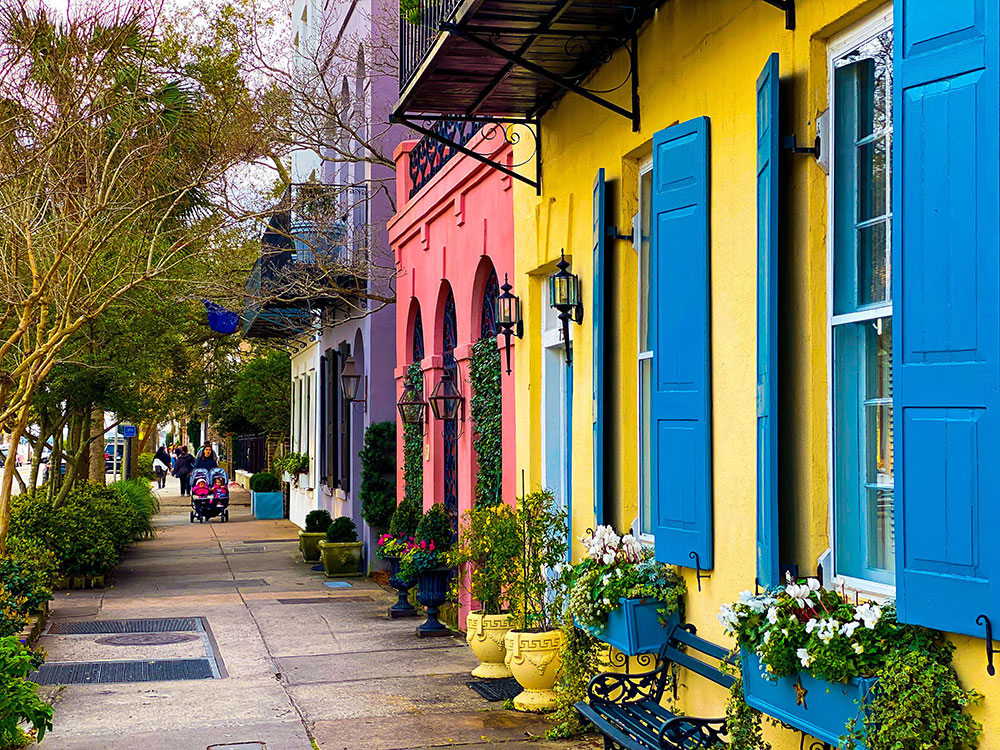
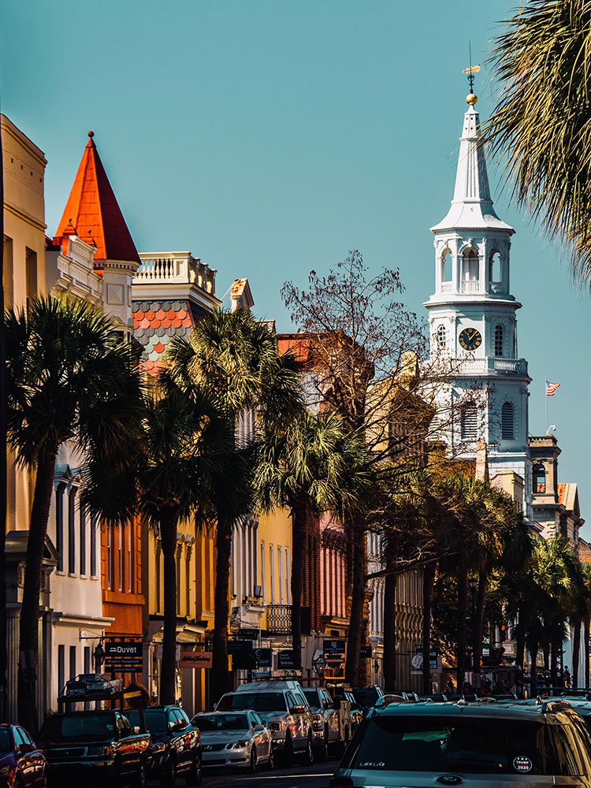
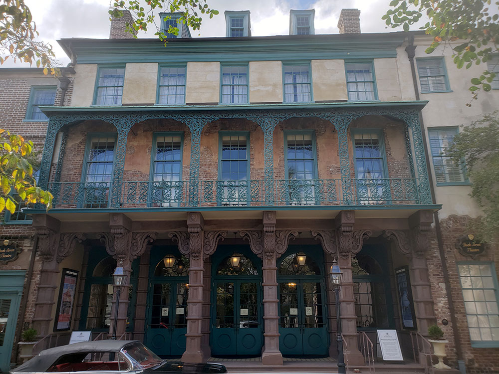
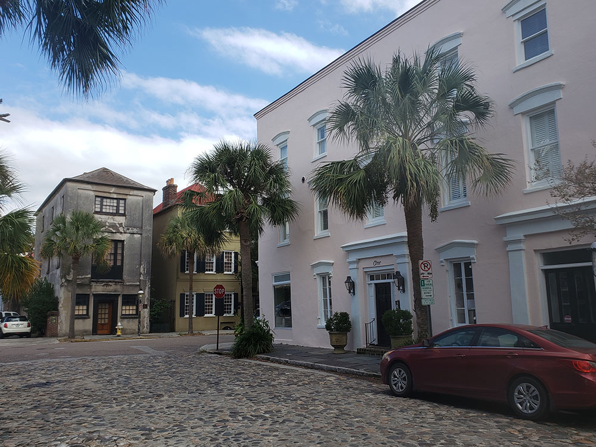
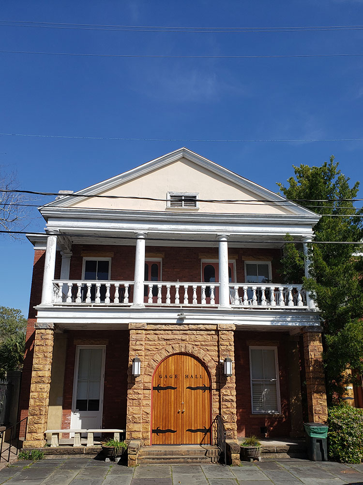
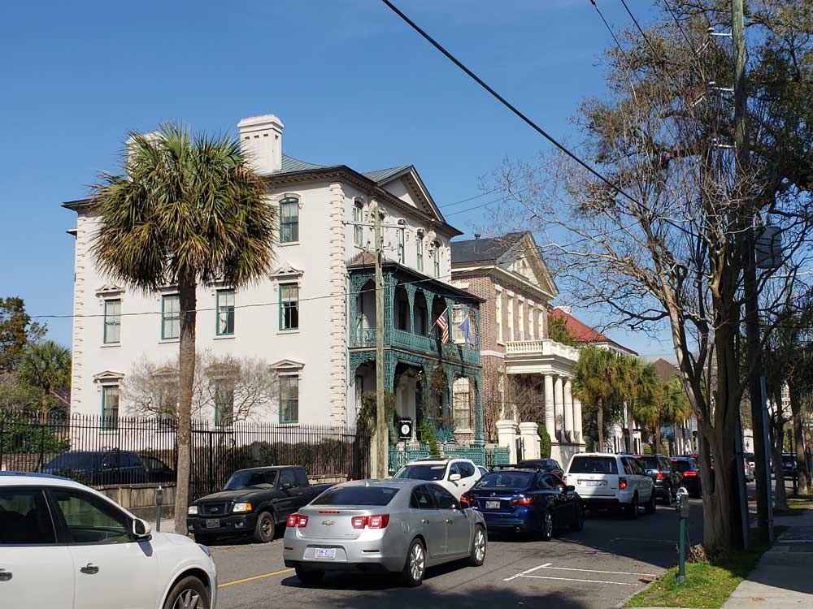
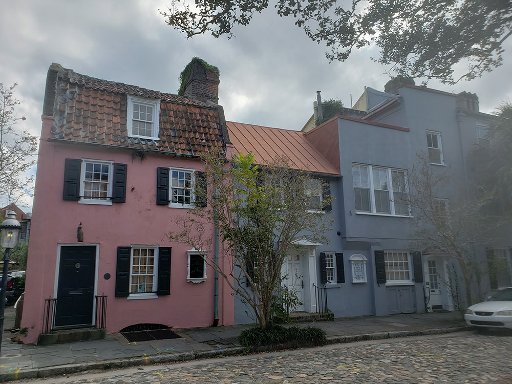
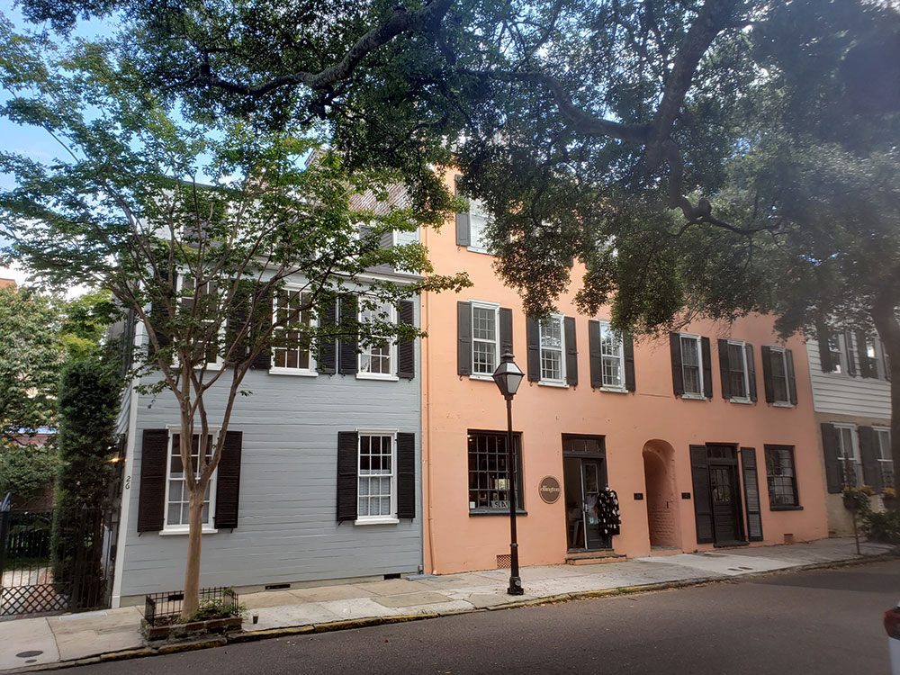
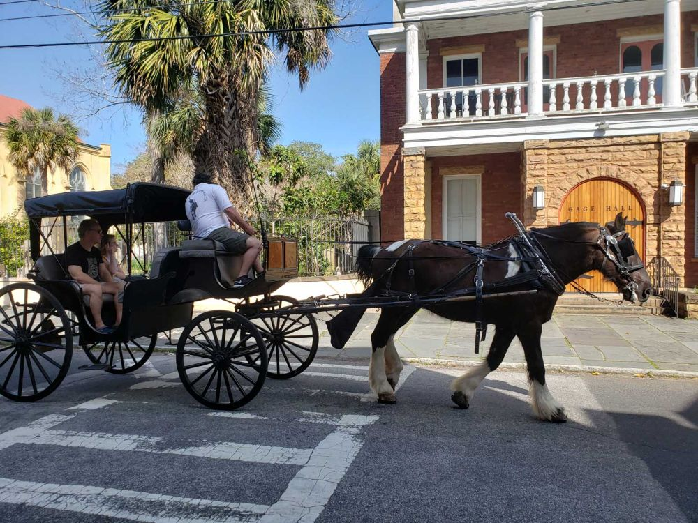